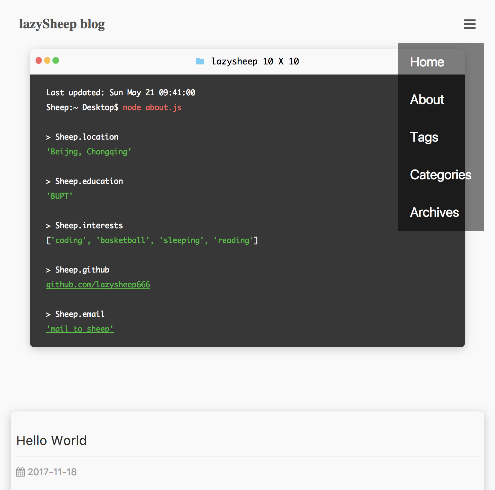
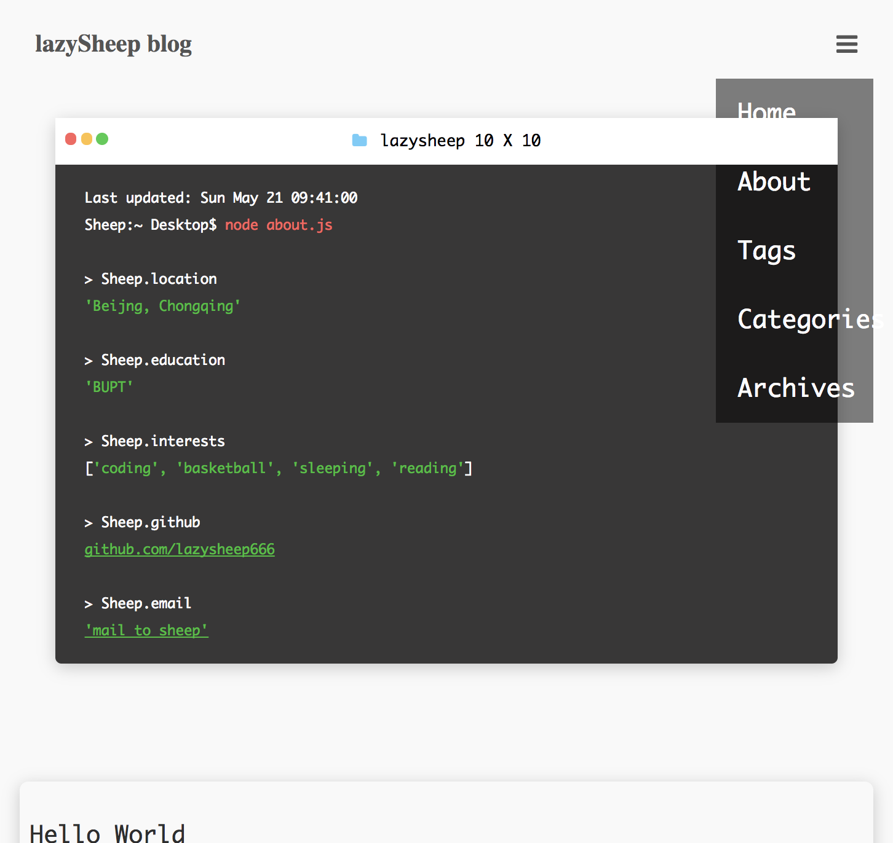

<!DOCTYPE html><html lang="zh"><head><meta charset="UTF-8"><meta name="viewport" content="width=device-width, initial-scale=1.0"><meta http-equiv="X-UA-Compatible" content="ie=edge"><title>background对被覆盖元素视觉上的影响 | lazySheep blog</title><link rel="stylesheet" href="/css/index.css"><link rel="stylesheet" href="https://netdna.bootstrapcdn.com/font-awesome/4.7.0/css/font-awesome.min.css"><script src="/js/third-party/jquery.min.js">           </script><script src="/js/third-party/velocity.min.js">           </script><script src="/js/third-party/velocity.ui.min.js">           </script><link rel="icon" href="/img/favicon.ico"></head><body><div id="header-outer"><div id="header-inner"><nav class="clear-fix" id="header-nav"><div class="pull-left" id="page-home"><a href="/">lazySheep blog</a></div><i class="fa fa-bars pull-right" id="toggle-nav" aria-hidden="true"></i><div class="pull-right" id="navs"><a class="site-page" href="/">Home</a><a class="site-page" href="/about">About</a><a class="site-page" href="/tags">Tags</a></div></nav><div id="site-info"><div id="terminal-pl"><div id="top-bar"><ul id="control"><li class="btn"></li><li class="btn"></li><li class="btn"></li></ul><div id="file-path"><i class="fa fa-folder folder-ic" aria-hidden="true"></i> lazysheep 10 X 10</div></div><div id="code-pl">Last updated: Sun May 21 09:41:00<br>Sheep:~ Desktop$ <span class="code-pl-input">node about.js</span><br><br>> Sheep.location<br><span class="anwser">'Beijng, Chongqing'</span><br><br>> Sheep.education<br><span class="anwser">'BUPT'</span><br><br>> Sheep.interests<br>[<span class="anwser">'coding', 'basketball', 'sleeping', 'reading'</span>]<br><br>> Sheep.github<br><a href="https://github.com/lazysheep666" target="_blank"><span class="answer">github.com/lazysheep666</span></a><br><br>> Sheep.email<br><a href="mailto:714201376@qq.com"><span class="answer">'mail to sheep'</span></a><br></div></div></div></div></div><div id="content-outer"><div id="content-inner"><article id="post"><a class="article-title">background对被覆盖元素视觉上的影响</a><time class="article-date"><i class="fa fa-calendar" aria-hidden="true"></i> 2017-11-29</time><h2 id="前言"><a href="#前言" class="headerlink" title="前言"></a>前言</h2><p>今天在写博客移动端的菜单栏的时候遇到了一点小问题:</p>
<ol>
<li>死活点不到Home的<code>a</code>标签，但是其他栏却能点到</li>
<li>按理应该是Home的<code>a</code>标签被什么东西给覆盖了，但是问题又来了（既然都被覆盖了，为什么还看得到）。</li>
</ol>
<p></p>
<a id="more"></a>
<h2 id="解决问题1"><a href="#解决问题1" class="headerlink" title="解决问题1"></a>解决问题1</h2><p>先不管这么多了。先给固定的导航栏加个<code>z-index: 999</code> 再说.</p>
<p></p>
<p>看一下源码<br><figure class="highlight plain"><table><tr><td class="gutter"><pre><span class="line">1</span><br><span class="line">2</span><br><span class="line">3</span><br></pre></td><td class="code"><pre><span class="line">#top-bar</span><br><span class="line">  position: relative</span><br><span class="line">  font-size: .8rem</span><br></pre></td></tr></table></figure></p>
<p>果然，由于terminal的头部被设置了<code>position: relative</code>创建了一个堆叠上下文，并且由于在HTML中<code>#top-bar</code>的顺序在固定导航栏的后面所以它的堆叠顺序自然就靠前了。<br></p>
<h2 id="解决问题2"><a href="#解决问题2" class="headerlink" title="解决问题2"></a>解决问题2</h2><p>问题1是解决了，可是问题2还是没有解决。。于是老夫查了一下标准。<br>标准上有这么一句话:<br><strong>The default behavior of the background is to allow boxes behind it to be visible</strong></p>
<p>大概意思就是说：如果覆盖的元素的background属性是默认的话，那么被覆盖元素也是可见的。<br><br>问题瞬间明了了，由于<code>#top-bar</code>的<code>back-ground</code>属性是默认的那么被它覆盖在下面固定导航栏自然也就可见了。</p>
<p>当我把它的<code>background-color</code>设为<code>#fff</code>时，自然而然就看不到被覆盖的部分了。<br><br></p>
<h2 id="总结"><a href="#总结" class="headerlink" title="总结"></a>总结</h2><p>遇到不能理解的情况出现时，要多查标准啊骚年。。。<br></p>
</article><nav id="pagination"><div class="pagination clear-fix"><div class="page-prev pull-left"><a href="/Memeory-Management-In-JS/"><i class="fa fa-chevron-left"> </i><span>Memeory Management In JS</span></a></div><div class="page-next pull-right"><a href="/《数据结构与算法JavaScript描述》学习笔记（三）—-—集合-md/"><span>《数据结构与算法JavaScript描述》学习笔记（三）—-—集合</span><i class="fa fa-chevron-right"></i></a></div></div></nav></div></div><footer><div id="footer-inner"><div class="social-icons"><a class="social-icon" href="" target="_blank"><i class="fa fa-github"></i></a><a class="social-icon" href="" target="_blank"><i class="fa fa-weibo"></i></a><a class="social-icon" href="" target="_blank"><i class="fa fa-twitter"></i></a></div><p class="copyright">Copyright © lazysheep Blog 2017</p></div></footer><script src="/js/toggle_nav.js"></script><script src="/js/scroll.js"></script></body></html>